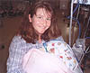
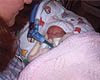
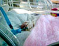
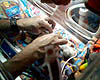
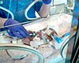
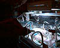
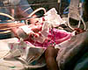
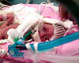
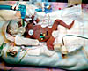

30th June 2001
Poppy is still very relaxed and contented. Her milk intake has been increased to 2ml an hour and she seems to be digesting it ok. She had a peripheral line for drugs inserted into her right foot this morning, but it had to be re-sited this evening, because it had dislodged itself. Until her long line is replaced, she will have to keep having smaller lines; they do not last as long, because her veins are still so small. Poppy has had a small weight gain of half an ounce since Wednesday. She sleeps for most of the day and is doing her job of feeding and growing very well. The blood tests showed that there is still a fungal infection in Poppy's body, so the antibiotics have been increased to try and sort it out. Once this infection is out of the way, Poppy will have more chance to really get on and grow.
29th June 2001
Poppy is having 1ml of Sharon's milk an hour now and is doing very well on it. She is relaxed and seems very contented. We are still awaiting the results of Poppy's blood tests.
28th June 2001
Sharon was able to hold Poppy for the first time today, nearly three weeks after Poppy's birth. Poppy had a very good night and is doing well. She fell asleep in Sharon's arms and has continued to remain steady for the rest of the day. Results of the blood tests to check on the status of Poppy's infection should come back tomorrow. Early signs are hopeful that the infection has gone. Poppy is still taking her milk well, although it was discontinued overnight whilst she received another blood transfusion.


27th June 2001
Poppy is still remarkably stable and is breathing well, with the help of the ventilator being slowly reduced. She is also able to maintain her temperature more successfully. Her weight has increased to 1lb 9oz, which helps. She is receiving 1ml of Sharon's milk per hour now and is digesting it well. Poppy was dressed this evening as her phototherapy treatment has been stopped for the time being. Hopefully Sharon will be able to hold Poppy for the first time tomorrow.

26th June 2001
Poppy has been given some milk today and appears to be digesting it, which is good news. She managed to untie her oxygen tube this afternoon - which gave the nurses a bit of a shock... otherwise she remains stable.

25th June 2001
Poppy's ventilator support was turned down today, which she coped with very well. It is intended to start feeding her soon, but they have not started yet. The doctors are quite positive that her lung infection is not getting worse, and hopefully will clear up soon.


24th June 2001
Poppy had a quiet night and is still very stable. The swelling in her arm caused by the I.V. line has almost disappeared now. She is still being treated for her fungal infection, which the doctors hope should clear up over the next week. Poppy had a brain scan during last week, which showed some bleeding in her brain caused by her setback last weekend, but the doctors are happy that the level of bleeding is very low and shouldn't cause any lasting damage. Her bowels are working well and she should be given milk tomorrow.


23rd June 2001
Poppy is breathing normal air today (for the first time in a week). The doctors are very pleased with her progress. Unfortunately her I.V. line was knocked and some fluid went into her arm which caused it to swell up, but it should go down within the next few days. If she remains stable over the next day or so they will start to give her milk again.
